This summer
I spent most of my time working at the "Zvezdniy Breeze" children's summer camp. Back in early spring, I decided that this summer I would work as a camp counselor, and our student squad Alpha helped me with that. My first shift was with the oldest age group; at that time, I was just getting to know the team. Now I have many acquaintances and friends from this camp.
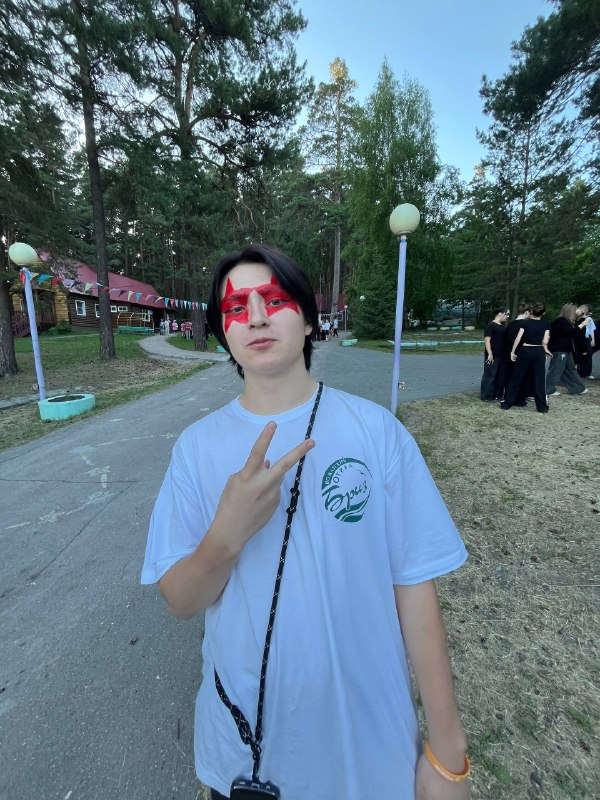
Best moments
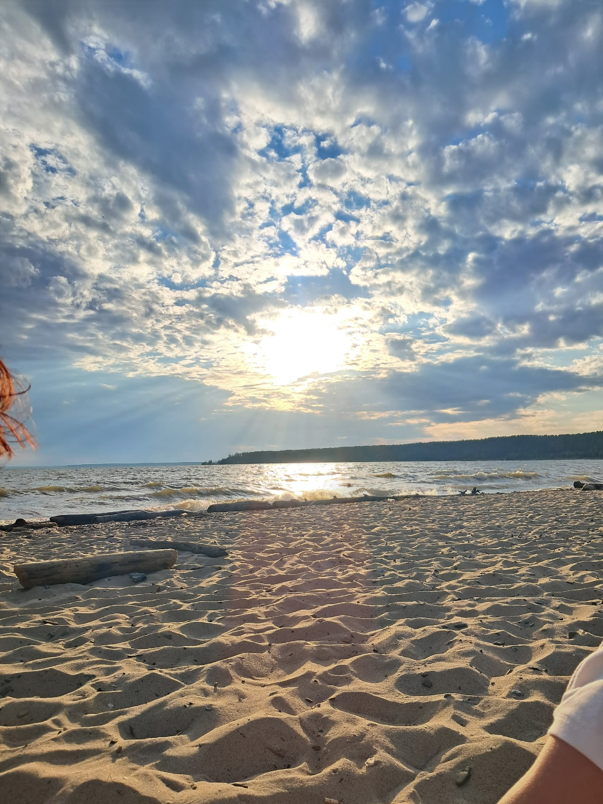
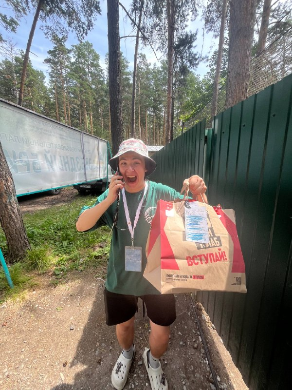
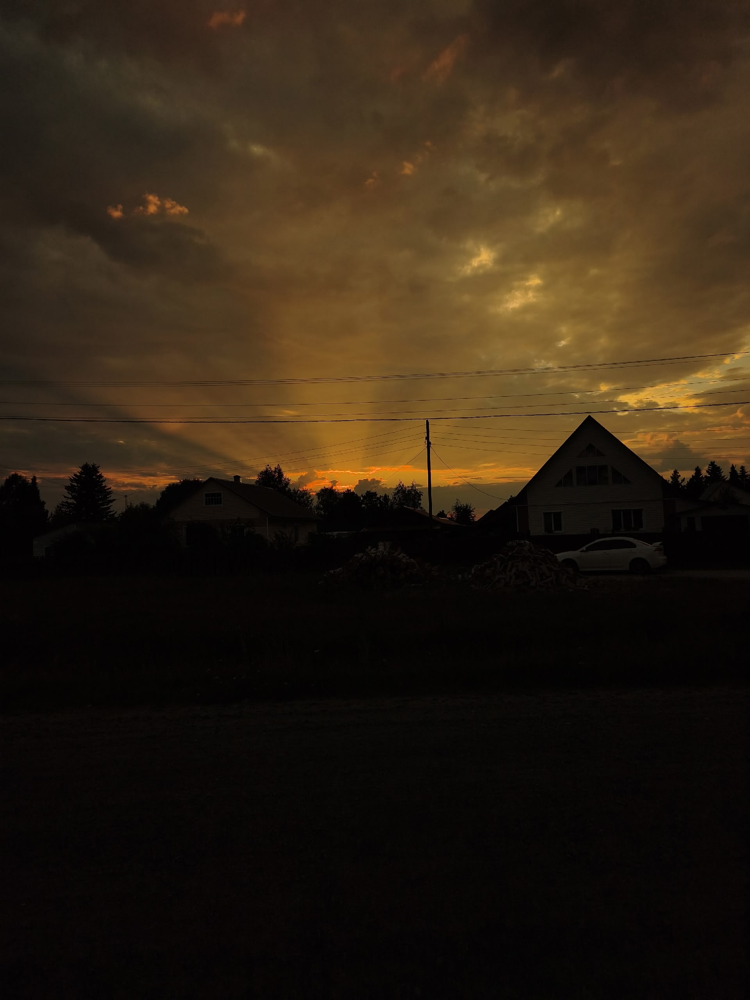
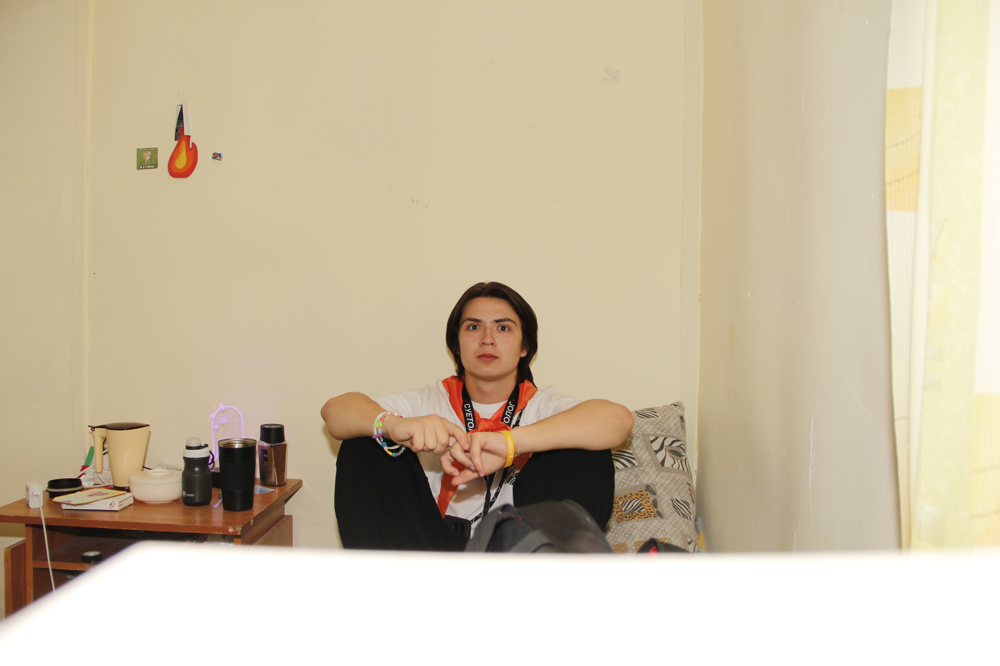
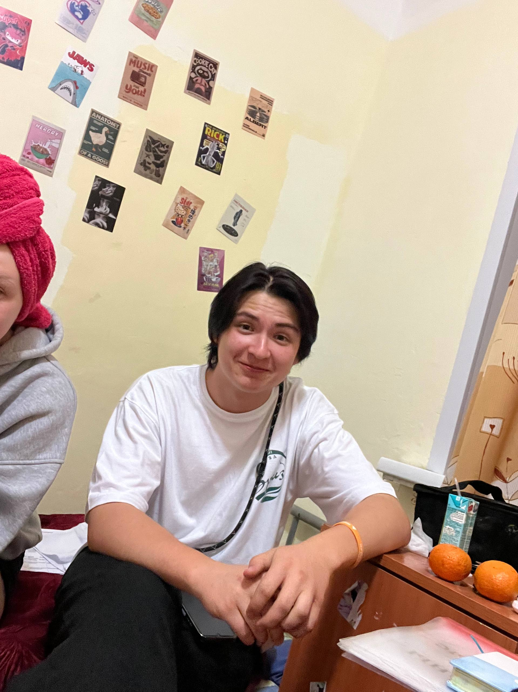
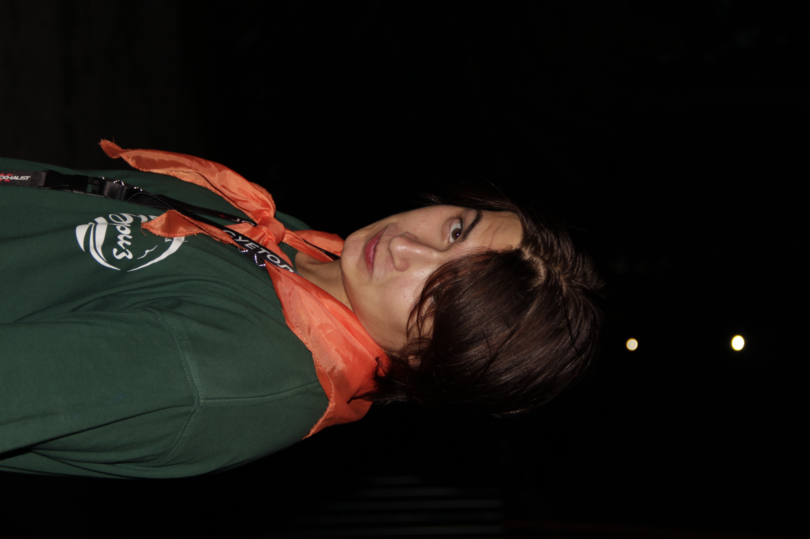

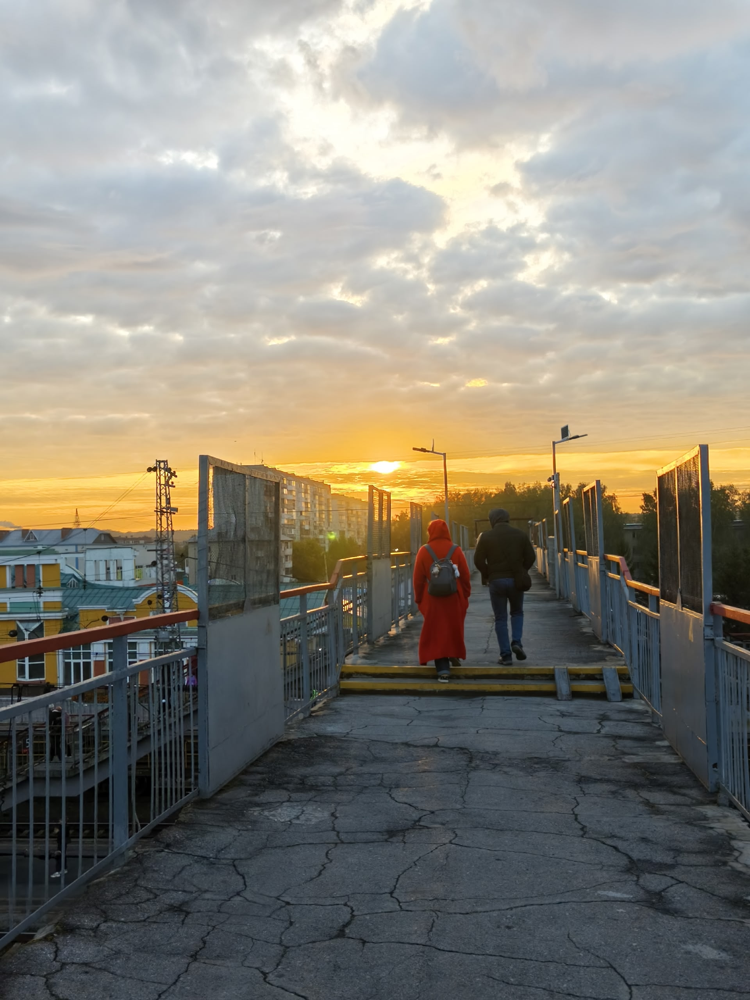
Wonderful people
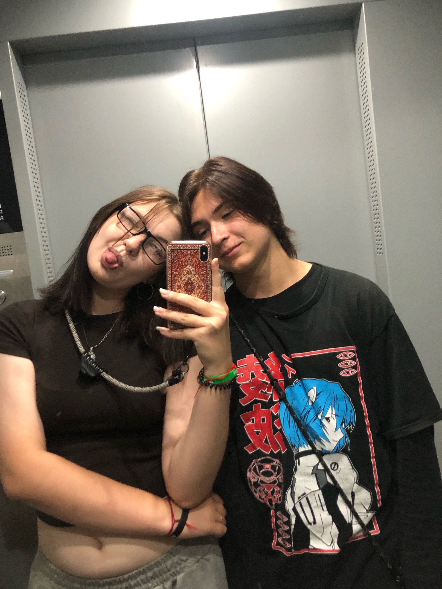
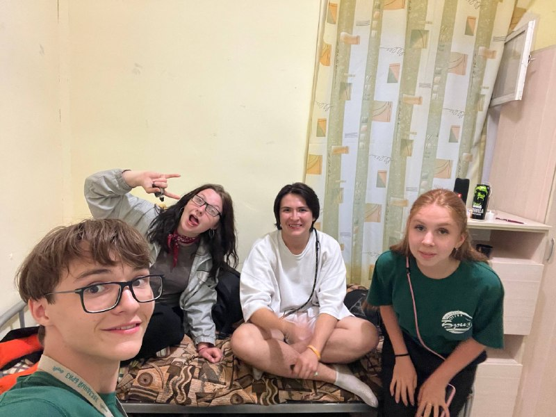
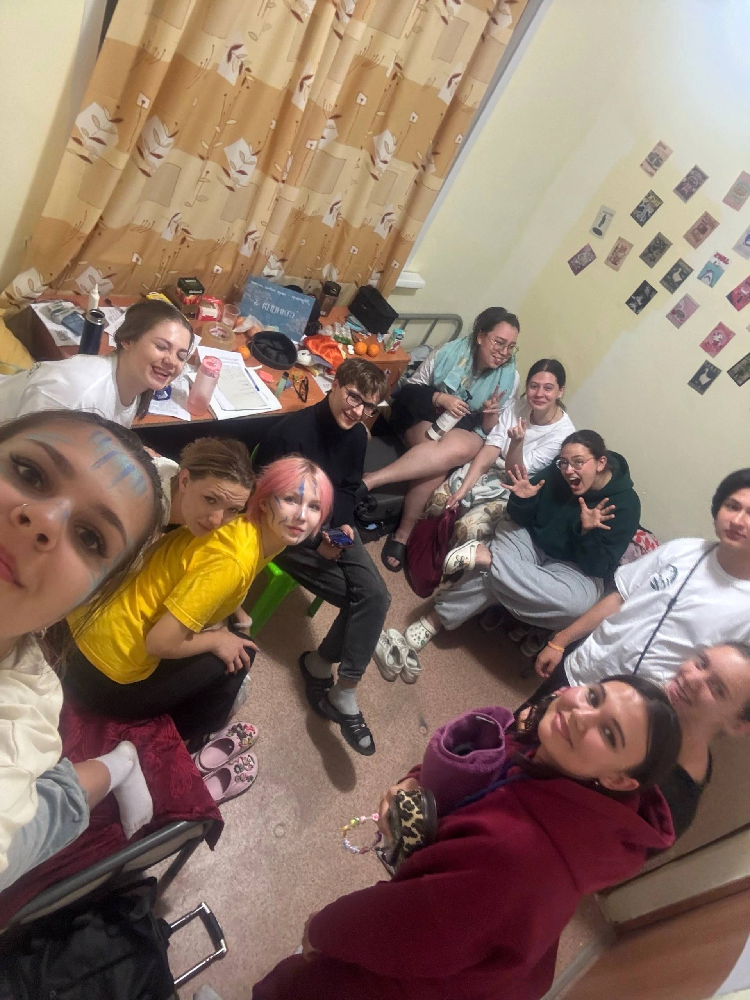
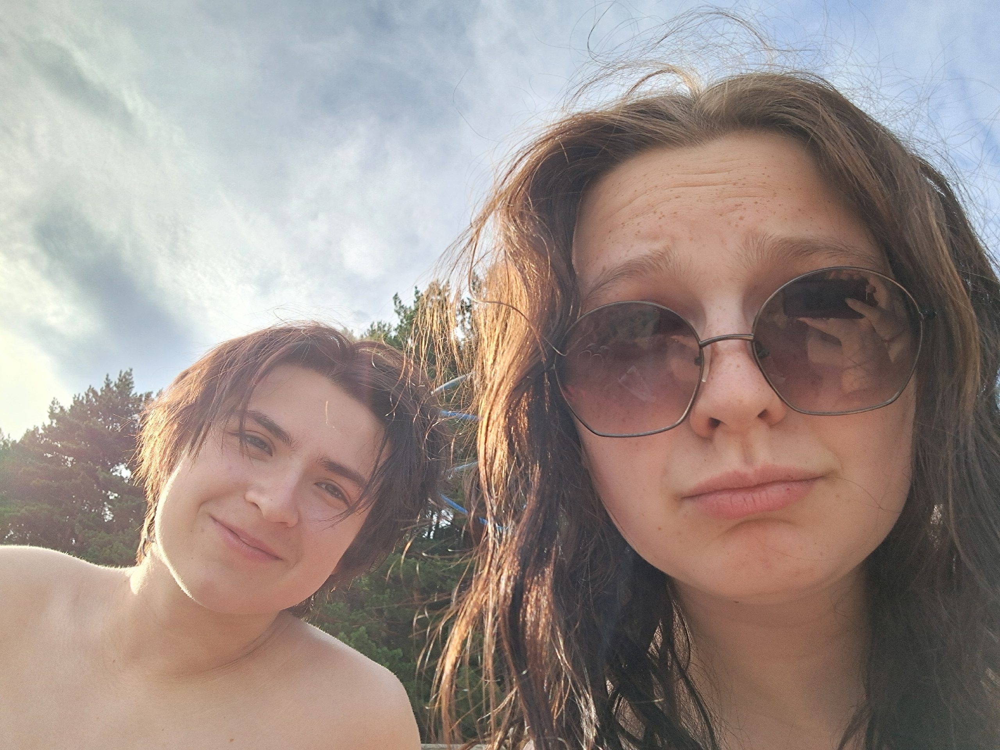
Именно из таких маленьких моментов
и складываются большие воспоминания...